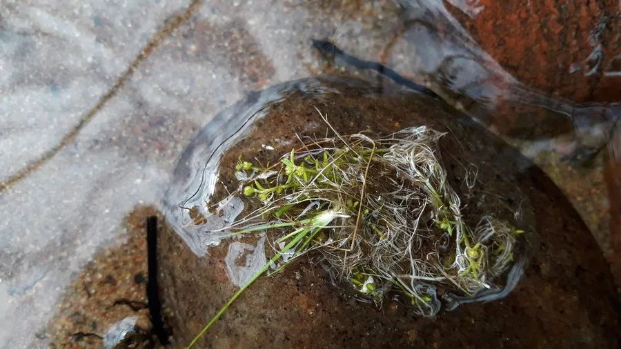

多肉植物 · 植物界
赤鬼城 Crassula 'Flame'

景天科青锁龙属肉质植物，叶片细长、层叠生长，出状态时呈暗红至紫红色，比火祭更深沉，是红色系多肉的代表。
- 分类
- 门被子植物门纲木兰纲目虎耳草目科景天科属青锁龙属
- 栖息环境
- 园艺栽培品种，需光照充足、干燥通风
- 地理分布
- 园艺栽培品种，中国各地广泛栽培
- 保护级别
- 栽培品种，无野生种群；不涉及保护等级
物种志
赤鬼城为景天科青锁龙属多年生肉质植物，茎直立，高可达二十厘米，易分枝群生。叶片交互对生，细长披针形，先端尖，肥厚，排列成四列并层层叠叠；常态下为绿色，光照充足、温差大时转为暗红色至紫红色。花期秋季，花小，白色，生于茎顶；蓇葖果，种子细小。
赤鬼城为园艺栽培品种，中国各地多肉爱好者栽培。它喜光、耐旱，春秋为生长旺季，夏季高温时需遮阴控水；适宜疏松透气、排水良好的基质，忌积水和闷热。叶色暗红深沉、株型紧凑，是红色系多肉拼盆的重要材料；光照不足时叶片变绿、节间拉长。繁殖以枝插为主，剪下的枝条晾干伤口后插土即可生根。
形态与习性
- 株型茎直立，叶四列层叠
- 叶色绿色，出状态暗红至紫红
- 花期秋季，花小、白色
- 光照喜光，光照足则色深
- 水分耐旱，干透浇透
- 土壤疏松排水良好的基质
- 主要用途红色系多肉拼盆、盆栽
趣味知识
- 赤鬼城的叶色比火祭更深，出状态时呈暗红甚至紫黑色。
- 它与火祭同属青锁龙属，叶片排列方式相似，常被一起搭配种植。
- 赤鬼城在温差大的秋季色彩最浓，夏季高温时会退回绿色。